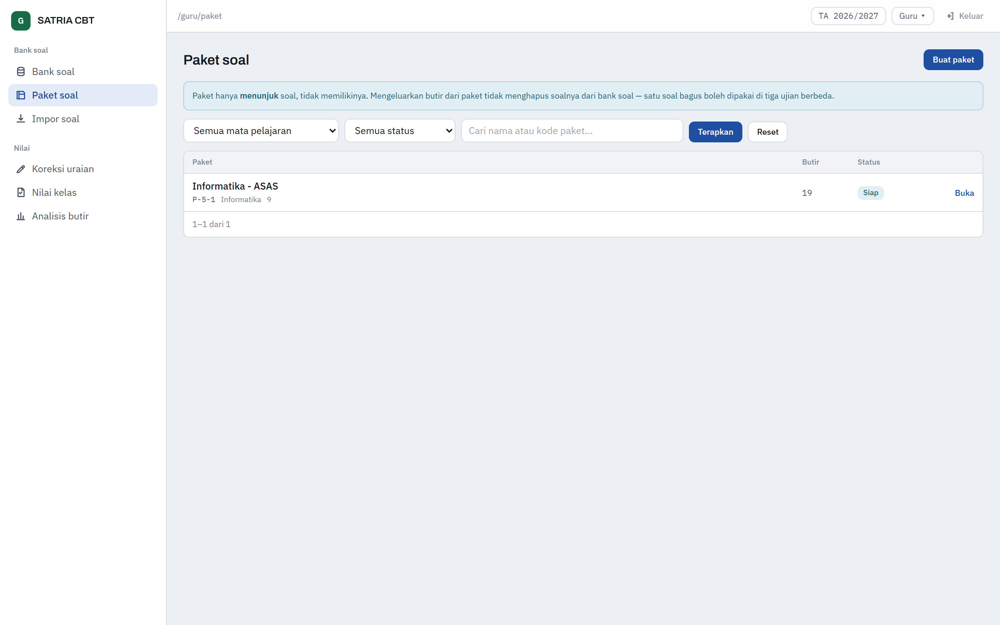
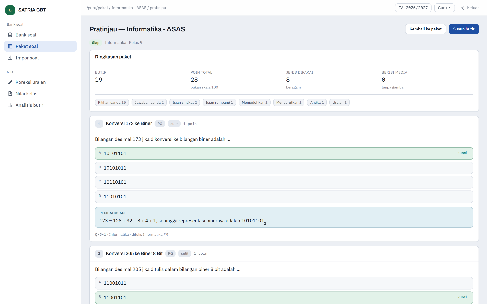

5. Paket soal
Mengumpulkan butir, menetapkan poin, dan menandai siap.
Paket soal adalah daftar butir yang akan dikerjakan siswa dalam satu ujian. Satu paket berisi soal-soal dari satu mata pelajaran saja, dan bisa dipakai di beberapa event.
Daftar paket

-
Tekan Buat paket, isi nama, mata pelajaran, dan tingkat kelasnya.
-
Klik nama paket untuk membuka isinya.
Mengisi paket

Empat angka di atas
- Butir — jumlah soal dalam paket.
- Poin total — jumlah seluruh poin. Ini penyebut nilai siswa.
- Objektif — berapa butir yang dinilai mesin.
- Uraian — berapa butir yang harus Anda nilai sendiri.
Menambah butir
Panel kanan menampilkan bank soal untuk mata pelajaran paket ini. Soal yang sudah ada di paket tidak ditawarkan lagi, sehingga tidak mungkin terjadi duplikat.
-
Cari atau telusuri bank soal di panel kanan.
-
Centang butir yang diinginkan, lalu tekan Tambah butir.
Poin dan urutan
Tiap baris punya kotak Poin yang bisa disunting langsung, dan tombol naik/turun untuk mengubah urutan. Tombol Buang mengeluarkan butir dari paket — tanpa menghapusnya dari bank soal.
Menandai siap
Tombol Tandai siap mengubah status paket dari Draf menjadi Siap. Admin hanya bisa memasang paket yang berstatus Siap.
Syaratnya satu: paket tidak boleh kosong. Selain itu tidak ada gerbang — termasuk tidak ada pemeriksaan apakah kunci jawabannya benar.
Pratinjau paket

Ini satu-satunya layar yang memperlihatkan paket sebagai satu kesatuan. Memeriksa butir satu per satu di bank soal tidak akan memperlihatkan apakah urutannya masuk akal, apakah dua soal terlalu mirip, atau apakah bobotnya seimbang.